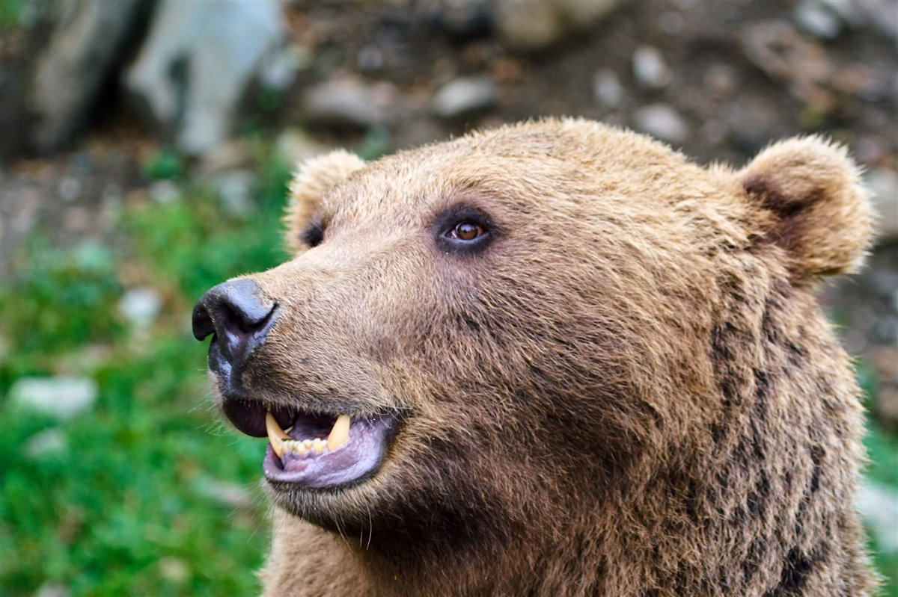

La población ibérica de cigüeña negra fue estimada entre 1995 y 2002 en 405-483 parejas (322-387 en España). Según SEO/BirdLife (Del Moral, 2018), en España en 2017 la población de cigüeña negra era de 351 parejas seguras y 24 probables, con un total de 375 territorios ocupados.
La cigüeña negra es un ave mítica. Antiguamente estaba asociada con la mala suerte, a diferencia de su prima la cigüeña blanca. Se trata de criaturas tímidas que viven en bosques y montañas, y que crían en una extensa área que va desde Portugal hasta China. Pese a estar incluida en el Libro Rojo de las aves de España (2004) en la categoría de “Vulnerable” y aparecer como “En peligro de extinción” en el Catálogo Nacional de Especies Amenazadas, su número está aumentando en toda Europa: en Alemania, de 25 parejas en 1970 se ha pasado a más de 500 en 2010. La mayoría de cigüeñas negras pasan el invierno en África, pero algunas permanecen en el Viejo Continente, como la población de la península Ibérica, donde disfrutan de los suaves inviernos de clima mediterráneo.

La población ibérica de 'Lynx pardinus' ha batido un nuevo récord, con un total de 1.365 ejemplares censados en la actualidad, entre adultos, subadultos y cachorros nacidos en 2021. Como fruto de los esfuerzos que las distintas administraciones realizan en torno a la conservación de la especie, ésta ha pasado recientemente (junio de 2015) de la categoría “En Peligro Crítico” a la categoría “En Peligro” en la Lista Roja de la UICN
Con pinta de gato salvaje, los linces habitan únicamente en el hemisferio norte. Se conocen cuatro especies diferentes, tres de ellas gozan de muy buena salud, mientras que la cuarta es una de las especies más amenazadas del planeta: el lince ibérico. Se trata de un felino de aspecto grácil, con patas largas y una cola corta con una borla negra en el extremo que suele mantener erguida batiéndola en momentos de peligro o excitación.

En España la estadística se redujo aún más, pasando de 90 a 30 en 2021. El área total de distribución se estima en unos 6.500 km², lo que supone un descenso de 1.700 km² respecto a 2020 y de 3.900 km² respecto a 2019. Esta situación exige medidas urgentes y continuas y un plan para que la conservación del oso pardo sea compatible con el desarrollo rural de los entornos donde se encuentra esta especie.
Aunque parezca algo sacado de las historias de nuestros abuelos aún, quedan osos pardos en España. De hecho, se calcula que la población de estos animales que viven en libertad por todo nuestro territorio es de 332 ejemplares. Las poblaciones de osos que sobreviven en Europa occidental están vinculadas a los macizos montañosos más agrestes.
